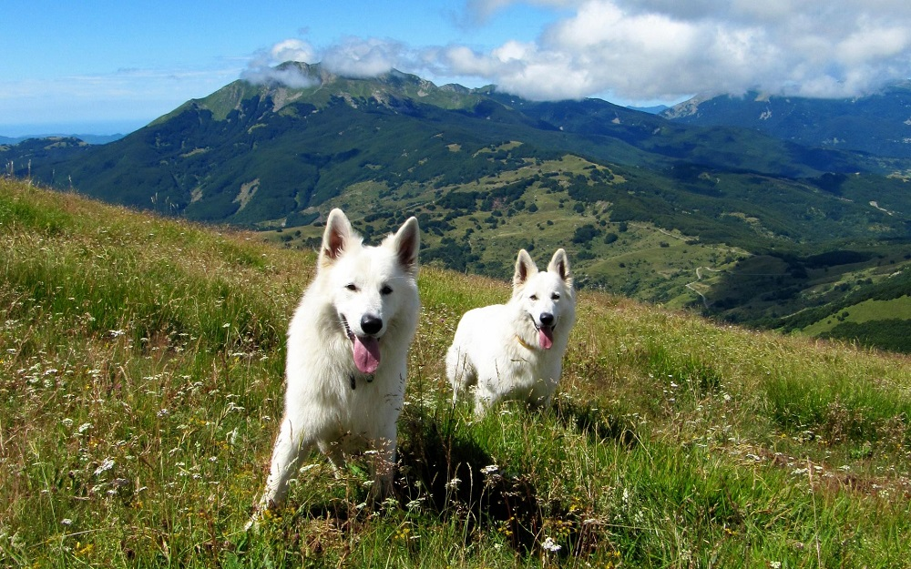

Беаля Швейцарская Овчарка (БШО)
В США и Канаде белые овчарки постепенно получали признание в качестве отдельной породы. Первые собаки этой породы были импортированы в Швейцарию в начале семидесятых годов. Американский кобель «Лобо», рожденный 5 марта 1966 г. может считаться родоначальником породы в Швейцарии, поскольку его потомки были зарегистрированы в Швейцарской племенной книге (LOS). В дальнейшем поголовье белых овчарок импортированных из Америки и Канады стало увеличиваться и началось целенаправленное разведение белых овчарок. По этой причине с июня 1991 года белые овчарки стали регистрироваться в Регистровой Швейцарской племенной книге (LOS). Сейчас существует большое количество чистокровных в нескольких поколениях белых овчарок, которые распространены по всей Европе.

Бе́лая швейца́рская овча́рка (фр. berger blanc suisse, нем. weisser schweizer schäferhund), известная также как американо-канадская белая овчарка — рабочая собака-компаньон, отличающаяся особым дружелюбием к детям; бдительная сторожевая собака; легко и быстро обучается.
Существует 2 разновидности белой овчарки: длинношёрстные короткошёрстные Отличаются они по длине шерсти. В США и Нидерландах более популярны короткошёрстные белые овчарки, в Германии, Франции, Австрии и других странах больше длинношёрстных белых овчарок.